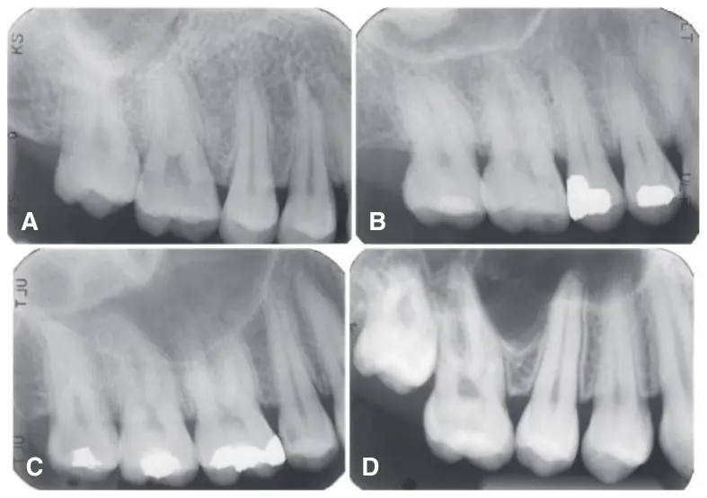
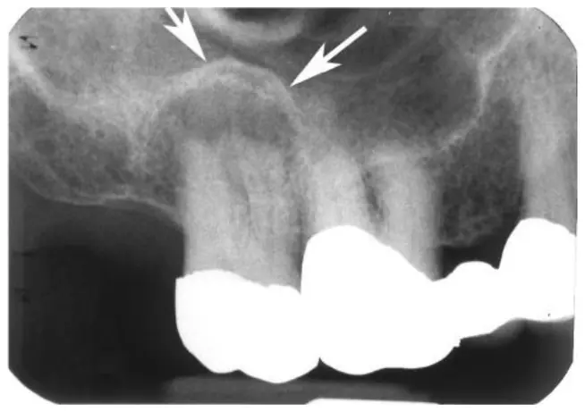

نسخه استخراجشده؛ ترجمه یا تأیید علمی انجام نشده است. وضعیت: captured
سینوس ماگزیلاری برای دندانپزشک از اینرو مهم است که تقلید، دوطرفه است: «ناهنجاریهای برخاسته از درون سینوس ماگزیلاری میتوانند علائمی بسازند که بیماریهای با منشأ ادنتوژنیک را تقلید کنند، و برعکس، ناهنجاریهایی که در دندانها و اطرافشان پدید میآیند میتوانند سینوس را درگیر کنند یا علائم بیماری سینوسی را تقلید کنند.»

پس اولین مهارت این یونیت این است: پیش از هر تشخیصی، بپرس این علامت از کدام سو میآید.
و علائم بالینی بیماری سینوس ماگزیلاری — فهرستی که بیشترش میتواند تو را به اشتباه بیندازد: درد و احساس فشار، تغییر ویژگی صدا، درد با حرکت سر، حساسیت دندانها به دق، دیساستزی، پارستزی یا بیحسی ناحیهای، و تورم و حساسیت ساختارهای صورت مجاور ماگزیلا.
و حالا شایعترین خطای تفسیر در این ناحیه — پنوماتیزاسیون: با گسترش حفرهی هوایی به داخل زائدهی آلوئولار، کف سینوس روی ریشههای پرمولر و مولر پرده میاندازد. آنگاه کف سینوس ممکن است «دور ریشهها موج بخورد یا روی آنها پرده بیندازد یا روی ریشهها سوپرایمپوز شود، و این تصور نادرست را بسازد که ریشهها کف سینوس را سوراخ کردهاند».
و راه پرهیز از این خطا، یک جمله است: «بررسی دقیقتر نواحی پریاپیکال، لامینا دورا و فضای لیگامان پریودنتال سالم را آشکار میکند.» یعنی ریشه در استخوان است، نه در هوا.
و سه صورت دیگر همین اشتباه رایج:
و پنوماتیزاسیون به همینجا ختم نمیشود: میتواند به زوائد پالاتال، زیگوماتیک و فرونتال ماگزیلا هم امتداد یابد.
کل این یونیت روی یک تقسیمبندی دوشاخهای بنا شده است: بیماریهای مرتبط با سینوس ماگزیلاری یا از بافتهای درون سینوس برمیخیزند (بیماریهای درونزا)، یا از بیرون سینوس — که غالباً منشأ ادنتوژنیک دارند — و به سینوس فشار میآورند یا به آن نفوذ میکنند (بیماریهای برونزا).

این دوشاخهای فقط یک دستهبندی دفتری نیست؛ یک ابزار تفسیری است. ضایعهی برونزا از استخوان میآید، پس کورتکس با خود میآورد. ضایعهی درونزا از مخاط سینوس میآید، پس کورتکس ندارد. همین یک تفاوت، در درسهای بعدی بارها تصمیمساز میشود.
و ترتیب روشهای تصویربرداری، از ساده به پیشرفته:
و یک محدودیت مهم پانورامیک: «گاهی مقایسهی کف سینوس راست و چپ روی تصویر پانورامیک دشوار است، بهدلیل سوپرایمپوزیشن ساختارهای آناتومیک مجاور یا تصاویر شبح.»
و یک نکتهی ویژه دربارهی نمای کرونال: تصاویر کرونال CBCT و MDCT بهترین نمایش را از کمپلکس اُستئومئاتال — ناحیهی اُستیوم سینوس ماگزیلاری و سلولهای هوایی اتموئید — و حفرههای بینی میدهند، و هر واکنش استخوان مجاور به بیماری سینوسی را نشان میدهند.
و اگر یافتهی مثبتی بود، مشورت با رادیولوژیست دهان و فک و صورت برای تعیین نیاز به تصویربرداری تکمیلی و تفسیر درست باید در نظر گرفته شود.